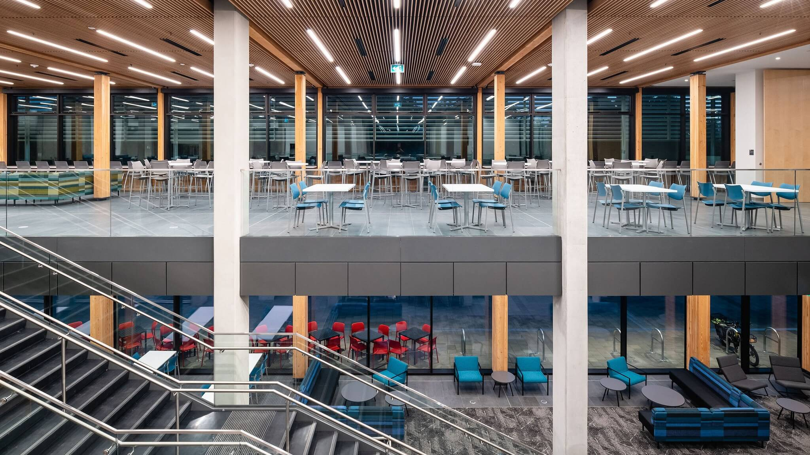
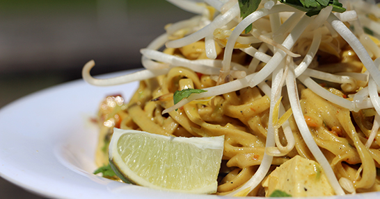

UVic offers a variety of dining options littered throughout campus. At UVic you can count on being served with great speed and efficiency that will never disapoint.

From Mystic Market, to the Grill, and the Cove, the Health and
Food bar for a health positive option. You get to choose.
FUN FACT STUDENTS GET 50% AT THE COVE AND MYSTIC
MARKET.

About UVic Food Services

The University of Victoria (UVic) offers a diverse culinary experience for its students, featuring an array of dining options to suit various tastes and dietary preferences. The Cove Dining Hall, a carbon-neutral facility, boasts ten food kiosks, including Port Cafe & Espresso Bar, Greens, Shawarma, Asian Fusion, and Hot Grill Pizza Kiosk, among others. Additionally, UVic's campus is home to Mystic Market, Boardwalk Cafe, Booster Juice, Chopbox, Flamin' Chicken, Fresco Taco Bar, Pickle & Spice, and Tofino's Treks. Catering to dietary needs such as vegan, vegetarian, halal, gluten-free, and dairy-free, UVic ensures that all students can enjoy fresh and delicious meals.